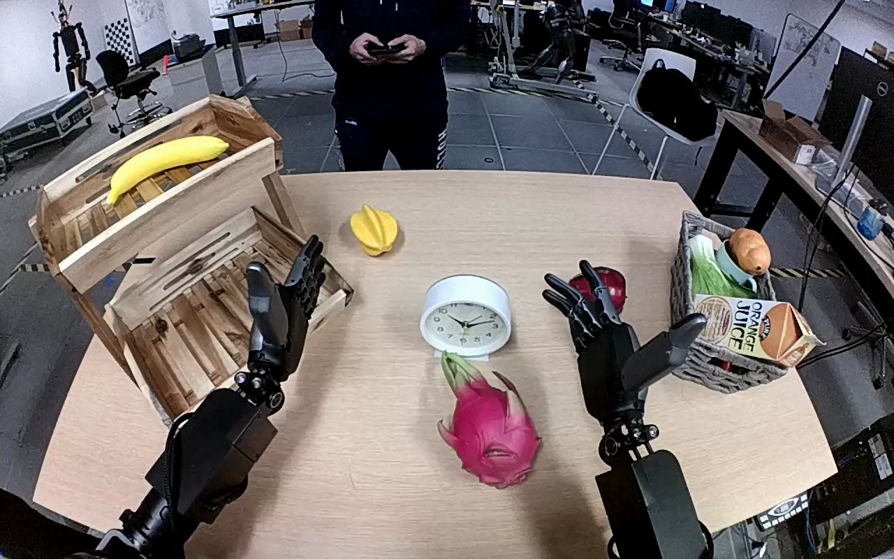

NVIDIA GR1 · 93
Video 93

Visual review action_review.json
{
"prompt_protocol": "humanoid_action_v1",
"prompt_provenance": "visually_authored_from_video_and_initial_frame",
"reviewed_contact_sheets": [
"sheet_001.jpg"
],
"inspected_frame_stride": 2,
"inspected_sampled_frame_count": 60,
"initial_scene": "Robot-facing egocentric view over a table. A white round analog clock sits near the center behind a dragon fruit; an open lower compartment of a wooden two-level shelf is to the robot's left. Both robot hands are open; the right hand is near an apple and a grocery basket.",
"observed_sequence": [
{
"frame_start": 0,
"frame_end": 20,
"action": "Both hands start open above the table. The left hand begins turning and moving toward the clock; the right hand shifts slightly without touching an object.",
"confidence": "high"
},
{
"frame_start": 21,
"frame_end": 50,
"action": "The left arm extends from the robot's left toward the central clock with spread fingers, positioning the thumb and opposing fingers around its round case.",
"confidence": "high"
},
{
"frame_start": 51,
"frame_end": 72,
"action": "The left fingers close around the clock case, tilt it and establish a grasp. The clock begins moving with the hand away from its original table position.",
"confidence": "high"
},
{
"frame_start": 73,
"frame_end": 94,
"action": "The left hand lifts the clock clear and carries it toward the lower compartment of the wooden shelf while maintaining the grasp. The right hand remains open and uninvolved.",
"confidence": "high"
},
{
"frame_start": 95,
"frame_end": 110,
"action": "The left hand lowers the tilted clock inside the lower shelf compartment, toward the slatted base, retaining its grasp as the clock enters the shelf.",
"confidence": "high"
},
{
"frame_start": 111,
"frame_end": 119,
"action": "The left fingers open around the clock and stop holding it; the clock remains lying inside the lower compartment. The open left hand remains nearby rather than fully withdrawing.",
"confidence": "high"
}
],
"arm_hand_roles": {
"left": "Sole manipulating hand: reaches, grasps the clock case with thumb and opposing fingers, lifts and transports it, lowers it into the lower shelf compartment and opens to release.",
"right": "Open, largely stationary hand above the right side of the table; provides no support, grasp, transfer or stabilization."
},
"anatomical_side_evidence": {
"description": "The camera looks forward from the robot's position, with both forearms projecting from the lower near edge toward the table. The active forearm traces back to the robot's left side in the lower-left of this egocentric view. Its thumb is on the medial side of the left hand and the passive right hand has the mirrored thumb arrangement. Thus the left-hand label follows robot-relative limb position and hand anatomy, rather than an arbitrary image-side label.",
"confidence": "high",
"limitations": "Shoulders are outside the camera view; forearm continuity, the egocentric body-relative view and mirrored hand anatomy establish the sides."
},
"coordination": "Single-hand manipulation throughout; no hand-to-hand transfer or person interaction.",
"terminal_state": "At frame 119, the clock lies inside the wooden shelf's lower compartment. The left fingers are open beside it and the right hand remains open over the table. The left hand has not fully withdrawn.",
"uncertainties": [
"The exact final contact points and clock face orientation are partially hidden by the open left hand and front shelf rail; the clock's location inside the lower compartment and the opened grasp are visible."
],
"annotation_discrepancies": [],
"evidence_frame_indices": [
0,
46,
60,
76,
90,
104,
110,
114,
118,
119
],
"selected_execution_status": "success",
"selected_execution_status_evidence": "The clock is visibly transferred from the tabletop into the lower compartment and the left fingers open at the end, leaving it inside.",
"inspection_coverage": {
"source_frame_count": 120,
"sampled_source_frames": "Every second decoded frame from 0 through 118, inclusive.",
"native_frames_viewed": [
0,
46,
60,
76,
90,
104,
110,
114,
118,
119
],
"source_initial_png_viewed": true,
"full_original_sequence_retained": true
},
"video_id": "93",
"dataset": "NVIDIA_GR1_100",
"dedicated_review_agent": "review_gr1_93",
"review_source_video": "NVIDIA_GR1_100/93/original/original.mp4",
"source_frame_count": 120,
"source_fps": 20.0,
"native_detail_frames": [
0,
46,
60,
76,
90,
104,
110,
114,
118,
119
],
"world_model_prompt": "The robot grasps the white clock at the center of the table with its left hand and lifts it clear. It carries the clock into the wooden shelf's lower compartment, lowers it onto the slatted base, and opens its fingers to leave the clock lying inside. Keep the camera fixed; preserve robot geometry, physically valid joint motion, and normal gripper opening and closing.",
"original_task_instruction": "Use the left hand to pick up white clock from middle of table to bottom of wooden shelf.",
"selected_segment": {
"start_frame": 0,
"end_frame_exclusive": 120,
"reason": "Complete original single-task reference; no cropping or trimming requested."
},
"source_video_sha256": "9361b13d81281d8727774ab0a7f75ebed41056a06b85265c1806657abc09c492",
"review_completed_at": "2026-10-13T18:40:39.174312+00:00"
}